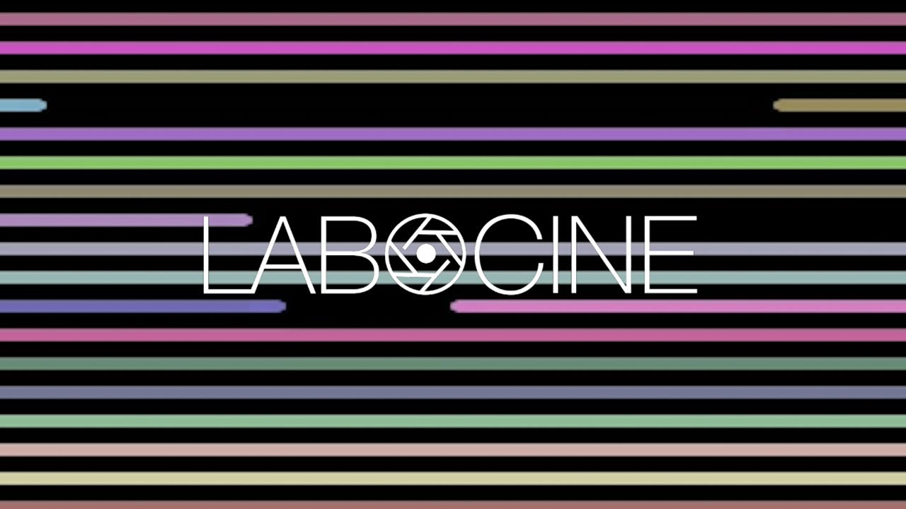

Love the enthusiasm but for Blast beta, we only support bigger screens - try it, you'll enjoy it more!
On a computer? Try resizing your browser window.
On a tablet? Try opening up in landscape mode.
Based on the popular tool BLAST to find regions of similarity between biological sequences, Labocine Blast! finds similarities between films in the Archive and creates a montage of clips based on the occurence of a specific entry/word.

Search for a keyword in the search bar.
Popup window? That's the Montage! Blast creates a compilation of videos on the fly consisting of all snippets across all our videos containing the search query. Sit and enjoy a cool generative video experience.
Grid? Scroll over the grid tile and preview the video snippets where your search term occurs. It may take some time depending on your internet speed so bear with blast! :-)